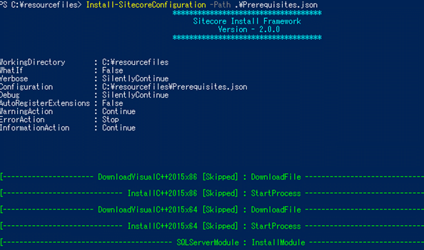
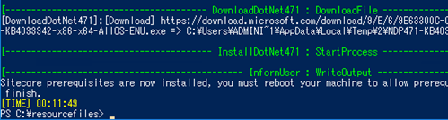

必須プログラムのインストールスクリプトを実行¶
インストールパッケージに付属する Prerequisites.json を使用して、必要なプログラムのインストールを行います。Prerequisites.jsonを使用することで、 .NET や IISなどの必要なプログラムがインストールされます。
PowerShellを管理者モードで起動して、 C:\resourcefiles フォルダーに移動します。
次のコマンドを実行して、必須ソフトウェアのインストールを行います。
Install-SitecoreConfiguration -Path .\Prerequisites.json
Prerequisites.jsonを使用すると、サーバー上で必要なプログラムがインストールされていない場合に自動的に適切なバージョンをダウンロードしてインストールしてくれます。

マシンの性能やネットワーク速度にも依存しますが、10-15分程度で完了します。

複数のソフトウェアがインストールされますので、念のため、マシンを再起動します。
再起動を忘れると、XP0-SingleDeveloper.ps1を実行中にエラーが発生する可能性があります。
これで、必須ソフトウェアのインストールが完了しました。